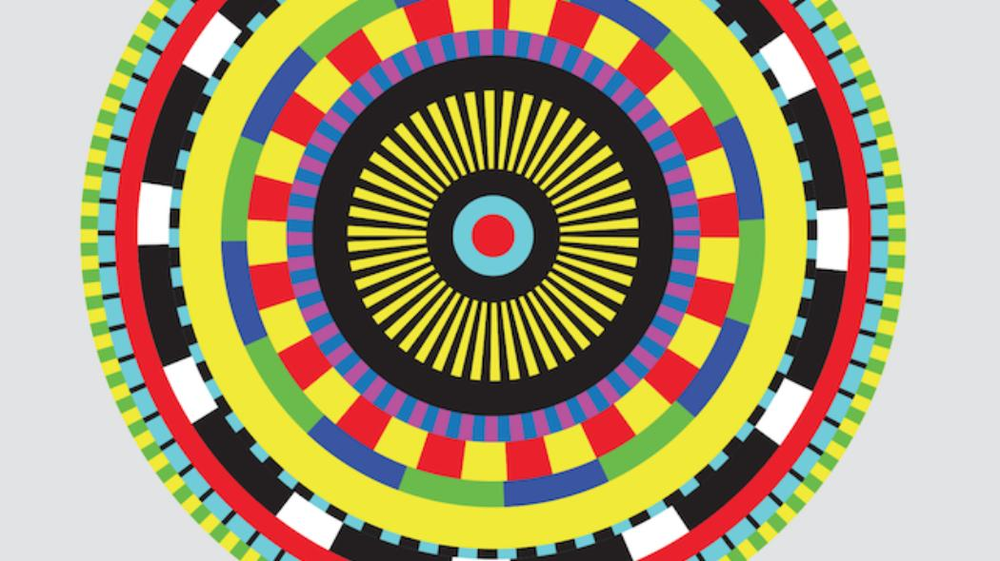
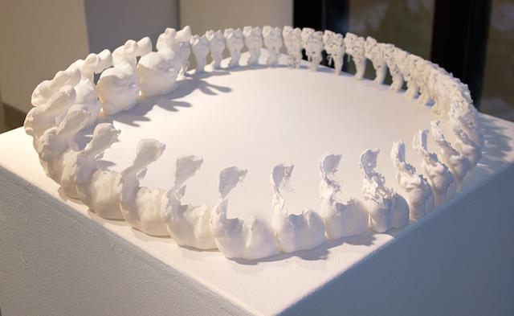
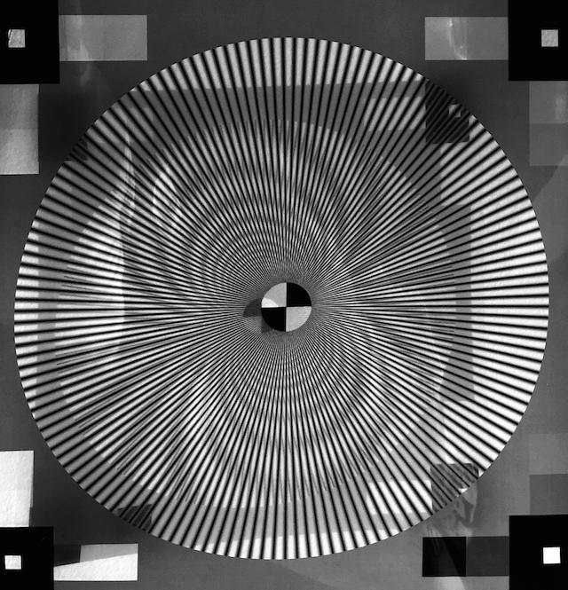
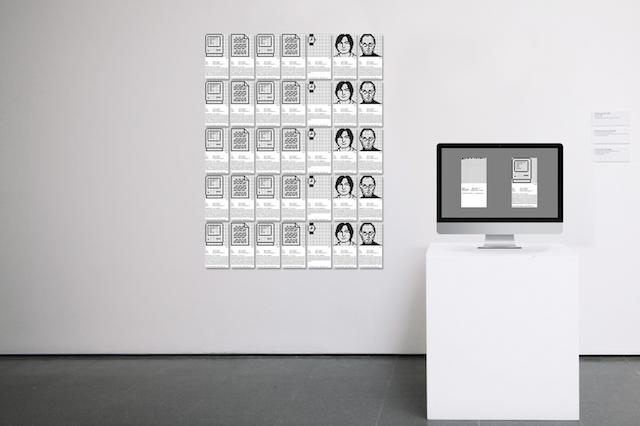
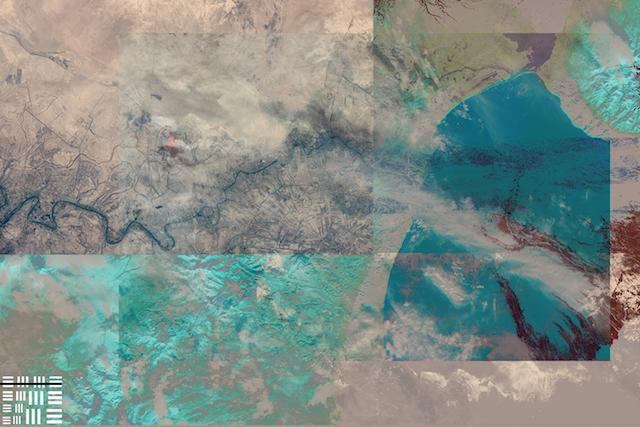
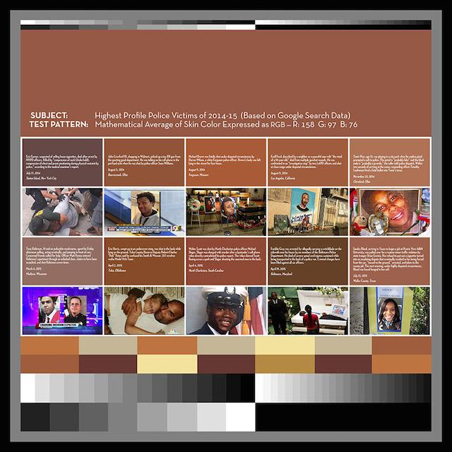
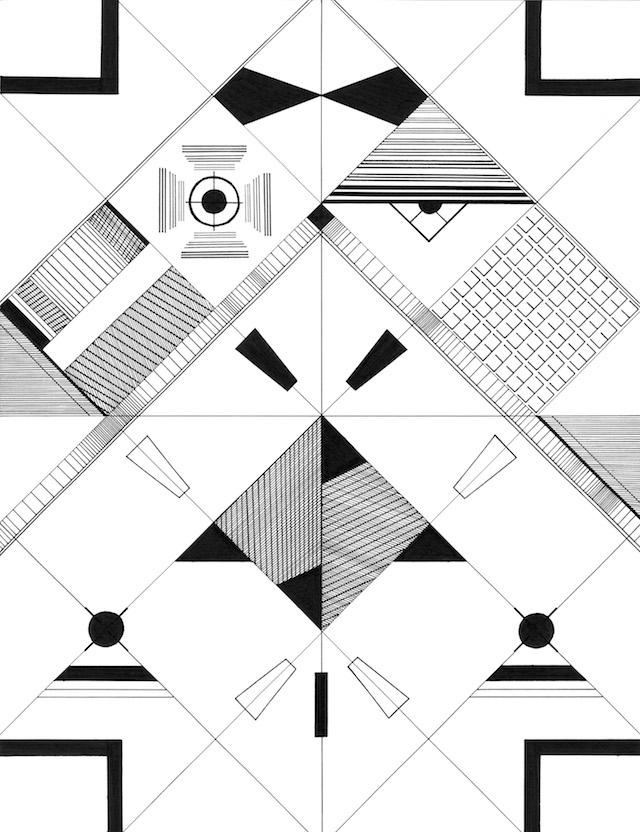
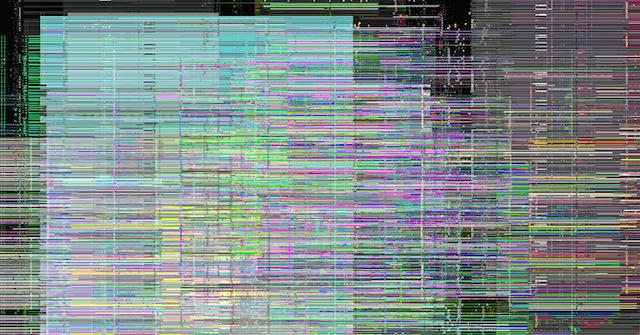

Test Patterns is a group exhibition that examines the ways in which we interact with technological standards. Technological standards are visual, auditory, and mathematical references usually held by groups of people to define a physical measurement. The works in Test Patterns offer an affectionate exploration of individual and collective agency claimed over technology, while exposing the limitations inherent in “universal” calibration techniques.
From color bars and tones to Pictures of Facial Affect (Ekman & Friesen 1976), the artists of Test Patterns have created their own patterns and standards–and have, in some cases, used pre-existing ones–as raw material to interpret, process, and generate entirely new artworks. This exhibit features work from seventeen artists who respond to technical standards using sculpture, drawing, video, sound art, performance, computation, and other media.
Participating artists include: Tom Burtonwood, Claire Corey, Jason Eppink, Louise Foo, Genevieve Hoffman, Noémie Jennifer, Tyler Kline, Patrick LeMieux, Jesse Malmed, Douglas McCulloh, Eric Mika; PARTYSHARD, Martha Skou, Kate Speidel, Cha Tori, A.P. Vague and Sarah Zimmer.
Flux Factory. Queens December 5 - 18, 2015 Co-curated with Maddie Hewitt and Roopa Vasudevan.
Links: Flux Factory Creator's Project        